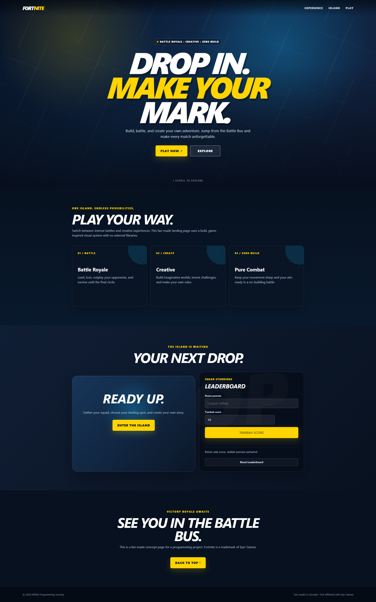
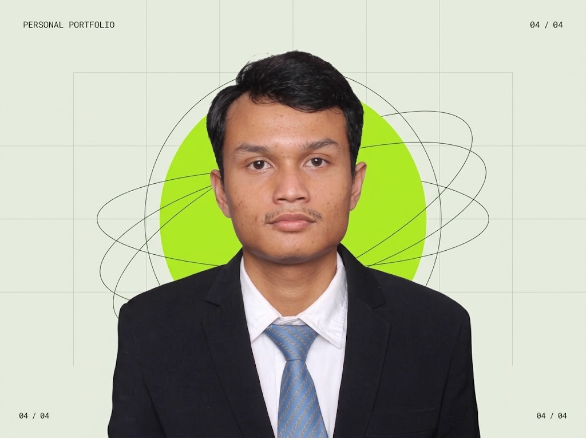
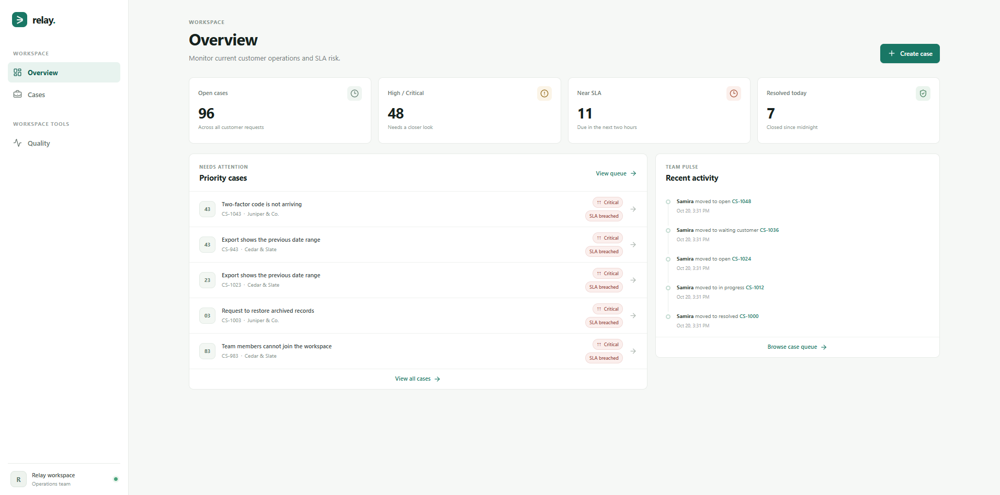

UI PRACTICE · FAN-MADE CONCEPT2026
Fortnite — Drop In
A fan-made Fortnite landing page concept inspired by the game’s Battle Royale, Creative, and Zero Build modes.
RoleProject creator
WEB PROJECT CREATOR · SURABAYA, INDONESIA
I create web projects from Surabaya, Indonesia. I have internship experience and am open to work opportunities.
Currently open to work opportunities

01 / A LITTLE ABOUT ME
Based in Surabaya. Building web projects and experience, one opportunity at a time.
02 / ABOUT
I’m Miftah Amiruddin Hakim Ganing, a web project creator based in Surabaya, Indonesia.
My projects include interactive websites and a customer operations dashboard. I also have internship experience and am open to work opportunities.
03 / SELECTED WORK
A growing collection

A fan-made Fortnite landing page concept inspired by the game’s Battle Royale, Creative, and Zero Build modes.
RoleProject creator

A customer operations dashboard for tracking open cases, urgent requests, and recent team activity.
RoleProject creator
04 / NEXT STEPS
I’m open to work opportunities. You can reach me through LinkedIn or GitHub.